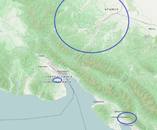
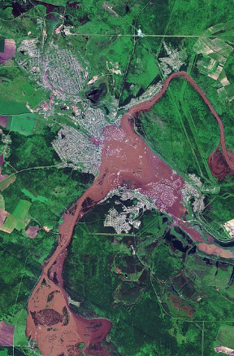
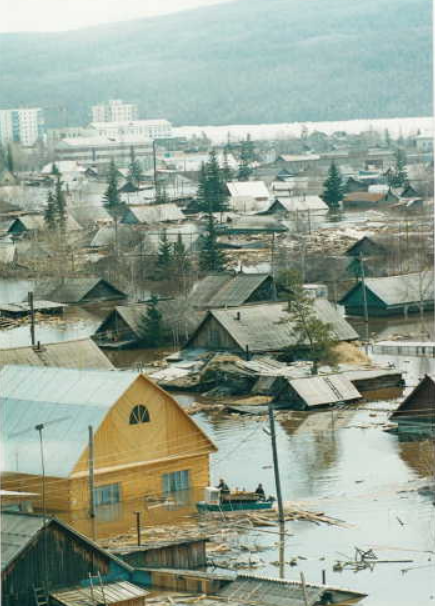
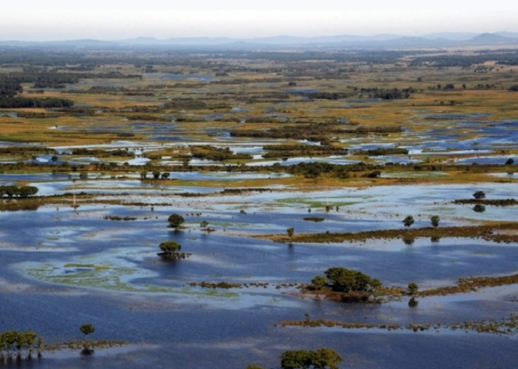
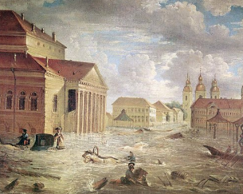

Крупное наводнение в Ленске произошло в мае 2001 года в результате ледохода на реке Лена. Паводок привёл к масштабным разрушениям городской инфраструктуры и жилых домов. Уровень воды достиг исторического максимума, что потребовало экстренной эвакуации населения. Последствия стихии ликвидировались силами МЧС и волонтёров в течение нескольких месяцев. Это наводнение стало одним из самых разрушительных в истории современной России.
История наводнений в России насчитывает множество трагических событий, каждое из которых оставило глубокий след в памяти людей. Одним из самых разрушительных стало наводнение в Ленске в 2001 году, когда уровень воды достиг рекордных отметок, полностью затопив город. Подобные катастрофы случались и в других регионах, например, в Крымске в 2012 году, где за несколько часов выпала полугодовая норма осадков.
Современные методы прогнозирования и предотвращения наводнений включают в себя использование спутникового мониторинга, автоматических гидрологических постов и сложных математических моделей. Эти технологии позволяют заранее предупредить население и провести эвакуацию, значительно снижая количество жертв. Однако, несмотря на прогресс, стихия иногда бывает непредсказуемой, и усилия по совершенствованию систем защиты продолжаются.
Подробнее»В ночь с 6 на 7 июля 2012 года в Крымске и близлежащих населённых пунктах произошло катастрофическое наводнение, вызванное экстремальными ливневыми осадками. За несколько часов выпала почти полугодовая норма осадков, что привело к резкому подъёму уровня рек и затоплению значительной части города. Наводнение унесло жизни более 170 человек и стало одним из самых трагических стихийных бедствий в современной истории России. Последствия наводнения были ликвидированы в течение нескольких месяцев при участии тысяч спасателей и волонтёров.